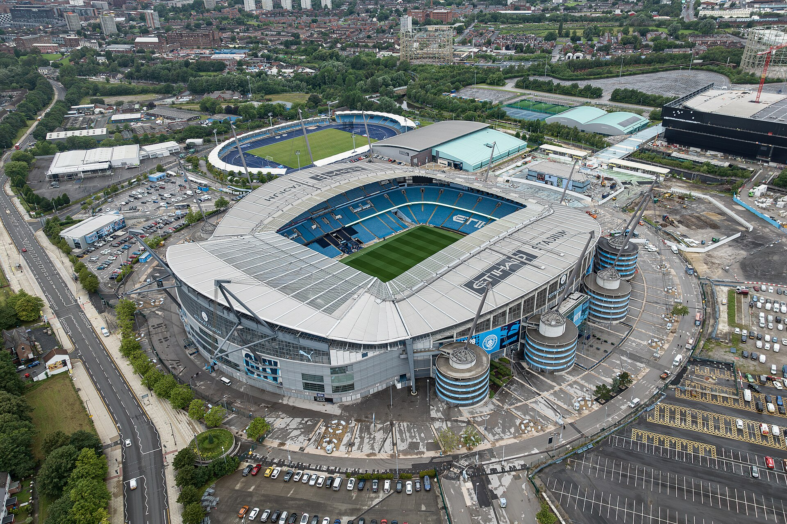

Compromis hôtel / proximité
ibis budget Pollard Street
2 Pollard Street. Hôtel 2 étoiles, réception 24 h/24 et chambres familiales annoncées. Environ 25 à 30 minutes à pied estimées jusqu’au stade ; itinéraire à vérifier.
Voir le trajet à pied12 & 13 décembre 2026
Un week-end de football à Manchester, au départ de Lyon, pour les adultes, les ados et les enfants.
Comparer les volsHeures locales : Manchester a une heure de moins que Lyon en décembre. Recherche du 30 octobre 2026.
Privilégier l’aller Jet2 du samedi matin, pour garder du temps avant le coup d’envoi. Pour dormir à distance de marche, comparer l’ibis Pollard Street et la chambre de Rylance Street.
Le point à régler : le retour du dimanche. Une offre directe apparaît chez Trip.com, mais les sources se contredisent. Disponibilité et horaires restent à vérifier chez la compagnie avant de réserver le séjour.
Lyon Saint-Exupéry (LYS) / Manchester (MAN)
Aller samedi 12, retour dimanche 13 décembre 2026.
Option à privilégier : 5 h 45 entre l’atterrissage prévu et le match. Tarif d’appel indexé sur Jet2, stock non revérifié au paiement.
Vérifier chez Jet2Seulement 1 h 50 avant le coup d’envoi, avant contrôle frontalier et transfert. Trop serré pour organiser sereinement un groupe avec enfants.
Voir easyJetHoraires prévisionnels : programme LYS–MAN. À confirmer à la réservation.
Non confirmé. Trip.com affiche ce départ le 13 décembre ; d’autres lignes de la même page donnent 11 h 20. Le programme ZborDirect situe le départ de 13 h 05 le mardi. Ne pas considérer cette offre comme disponible sans validation chez easyJet.
Consulter l’offre repéréeSi le direct du dimanche n’est pas disponible, rechercher un billet avec escale via Paris ou Amsterdam chez Air France / KLM. Aucun horaire ni tarif daté fiable obtenu pour ces correspondances.
Relancer la recherche du 12 au 13* Prix indicatifs repérés le 30/10/2026, issus de pages indexées, pas d’un devis disponible au paiement. Bagages, sièges, frais et conditions à vérifier. Aucun total aller-retour garanti ; aucun tarif adolescent spécifique confirmé.
Du 12 au 13 décembre 2026.
Prix Booking.com pour 1 chambre et 2 adultes.
Effectif et âges à préciser pour un devis familial.
2 Pollard Street. Hôtel 2 étoiles, réception 24 h/24 et chambres familiales annoncées. Environ 25 à 30 minutes à pied estimées jusqu’au stade ; itinéraire à vérifier.
Voir le trajet à pied8 Rylance Street. Chambre chez l’habitant avec cuisine commune. Environ 15 à 20 minutes à pied estimées jusqu’au stade. Vérifier couchages, sanitaires et accueil des mineurs.
Voir le trajet à pied3–4 Beech Mount, Harpurhey. Maison d’hôtes à environ 3,3 km du stade à vol d’oiseau, donc pas tout près à pied. Prévoir un transport et vérifier le type de salle de bains.
Voir le trajetRelevé Booking.com du 30 octobre 2026 : prix affichés pour la recherche, variables selon disponibilité, occupation et conditions. Petit-déjeuner, annulation, taxes éventuelles et accueil du groupe à vérifier. Temps de marche estimés, non mesurés sur un itinéraire. Le Leonardo Piccadilly ressort à 312,80 € ; il est moins adapté au budget recherché.
Destination : ibis budget Manchester Centre Pollard Street,
2 Pollard Street, Manchester M4 7DB.
À privilégier avec les bagages : train jusqu’à Manchester Piccadilly, puis un arrêt de tram jusqu’à New Islington. Compter environ 45 à 70 minutes depuis la sortie du terminal, selon les attentes et la correspondance. Estimation de préparation, hors contrôle des passeports et récupération des bagages.
Prendre le même train direct jusqu’à Manchester Piccadilly, puis marcher jusqu’à l’hôtel. Accor annonce environ 1 km et 10 minutes ; prévoir plutôt 15 à 20 minutes avec enfants et valises. Cela évite une correspondance et un billet de tram.
Voir la marche depuis PiccadillyÀ l’aéroport, prendre le tram en direction de Victoria via Market Street. Descendre à Market Street, puis prendre un tram vers Ashton-under-Lyne, jusqu’à New Islington. Vérifier la direction et le quai de correspondance sur place. Terminer à pied jusqu’à l’hôtel.
Prévoir environ 75 à 95 minutes au total depuis la sortie du terminal, attentes et marche comprises : estimation, généralement plus lente que le train. Le réseau Metrolink est le tramway de Manchester.
Pour l’option train + tram, prévoir un titre ferroviaire et un titre Metrolink, sauf si le billet choisi couvre explicitement les deux trajets. Acheter ou valider le titre de tram avant de monter. Pour l’option tout en tram, le trajet traverse les zones 1 à 4.
Les prix et réductions dépendent des âges et du billet choisi : aucun tarif familial n’est chiffré ici avant de connaître le groupe. Vérifier les conditions auprès des opérateurs.
Sources consultées le 30 octobre 2026 : aéroport, accès au train et trajet vers Piccadilly ; Bee Network, lignes Metrolink ; plan du tram ; Accor, adresse de l’hôtel et accès depuis Piccadilly. Les durées globales, de correspondance et de marche finale sont des estimations, non un itinéraire horaire validé pour le 12 décembre. Vérifier travaux et départs sur Bee Network et National Rail pour le jour du voyage.

Programme proposé, sous réserve des vols et des billets.
Les informations à réunir pour passer de cette sélection à un devis.
Le nombre exact de voyageurs et l’âge de chaque mineur à la date du voyage détermineront les catégories passagers, les chambres et les couchages. Aucun tarif enfant ou adolescent n’est présumé identique au tarif adulte. Ne transmettez pas de noms ni de documents d’identité sur cette page publique.
Le calendrier confirme le match ; cette page ne confirme ni prix ni disponibilité des billets. Vérifier la vente officielle, les critères d’achat, les catégories d’âge et les places contiguës pour les accompagnants et les mineurs avant de payer les transports.
Billetterie officielle Manchester CityPour un séjour touristique classique, les voyageurs français doivent vérifier les exigences de passeport et d’ETA sur les sites officiels. Les règles dépendent de la nationalité et du statut de chacun ; les mineurs doivent aussi être vérifiés individuellement. Si un mineur résidant en France voyage sans titulaire de l’autorité parentale, vérifier l’autorisation de sortie du territoire et les pièces associées.
ETA : gouvernement britannique / Voyager au Royaume-Uni / Autorisation de sortie du territoire
Vols aller-retour pour chaque catégorie d’âge, bagages, sièges, chambres selon couchages, billets du match, transferts, repas et formalités applicables. Les montants affichés ici ne constituent pas un forfait ; aucun budget global fiable n’est calculable avant confirmation du retour et de l’effectif.